Wild Forages
Small-group dawn walks through the Cape's secret mushroom spots. Learn to identify, harvest responsibly, and take home wild mushrooms for breakfast — guaranteed.
Scroll to step inside
Cape Town · Wild Mushroom Company
Gary Goldman has spent a lifetime among the fynbos and forest floor — learning which fungi to feast on, which to leave well alone, and how to read the wild like a local. Now he's sharing it: small-group guided forages at first light, and the field guide that started it all.
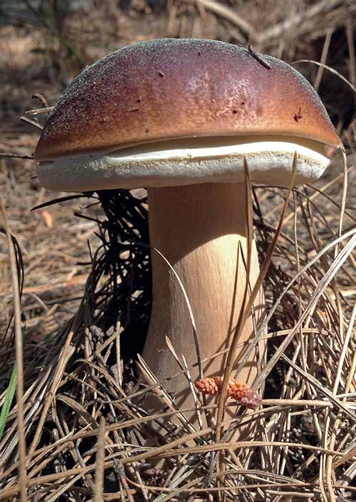
Boletus edulis · PorciniBook a Forage
A small-group dawn walk through the Cape's wild mushroom country, led by Gary himself — and you take home what we find. If we don't find mushrooms, we go again. That's the guarantee.
Booking is essential — spaces are capped at eight per forage.
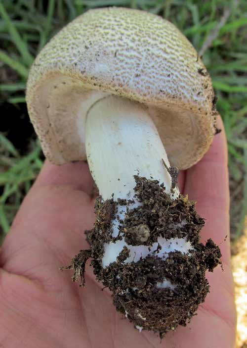
Meet the Fundi
In Cape Town slang, a fundi is someone who truly knows their craft. Gary Goldman earned the name the hard way — decades of dawn walks through pine plantations and Afromontane forest, magnifying glass in one hand and basket in the other, learning to tell a prized porcini from a dangerous pretender.
What began as a personal obsession became a mission: to take the fear and mystery out of fungi and put real, careful knowledge in its place. Today Mushroom Fundi helps everyday people forage safely, grow their own, and cook with the most extraordinary ingredients on earth.
As featured in
What We Do
Whether you want to walk the wild forest at first light or simply read up first — there's a way in.
Small-group dawn walks through the Cape's secret mushroom spots. Learn to identify, harvest responsibly, and take home wild mushrooms for breakfast — guaranteed.
The Mushroom Fundi — a beautifully photographed guide to the Cape's wild fungi, distilled from 25 years on the trail.
Field Notes
A fresh six from the guide each visit — the delicious, the medicinal, and the deadly. Tap into the field data behind every safe forage.
Tap any card to flip it over for the field notes — telltale signs, look-alikes and a fact from the guide.
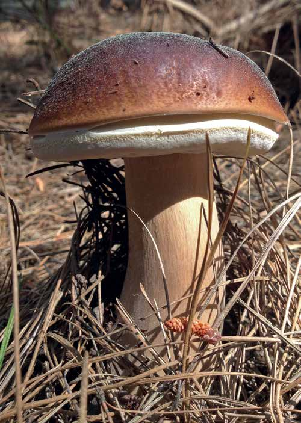
Choice edibleThe mushroom hunter's delight — meaty, nutty and prized worldwide.
Field notesBoletus reticulatus, B. aereus and the bay bolete — but porcini flesh and pores don't bruise blue.
South African porcini are free of the insect larvae that plague European ones — making ours highly sought after worldwide.
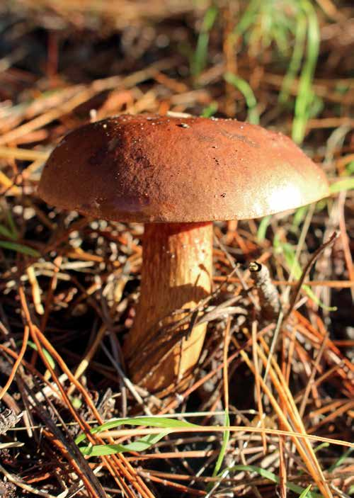
EdibleA beginner-friendly bolete with a glossy bay-brown cap.
Field notesOther boletes — but the blue-bruising pores of young specimens give it away.
Those blue stains are just boletol oxidising — a harmless substance found in many boletes.
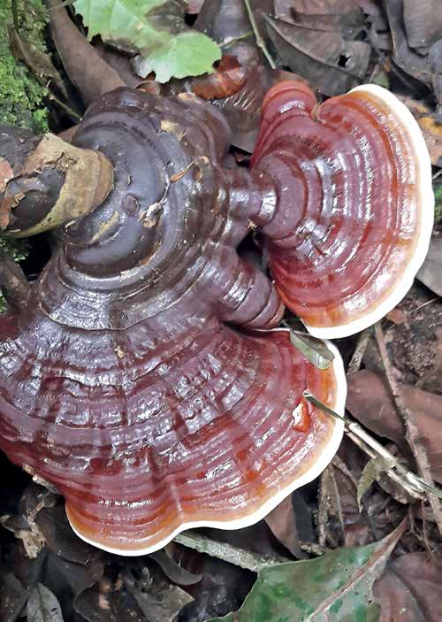
MedicinalThe lacquered "mushroom of immortality" — woody, and brewed for medicine.
Field notesGanoderma applanatum and Amauroderma sprucei; G. tsugae and G. curtisii share the varnished look.
Called the "King of Herbs" in ancient China — traditionally taken for immunity, inflammation and stress.
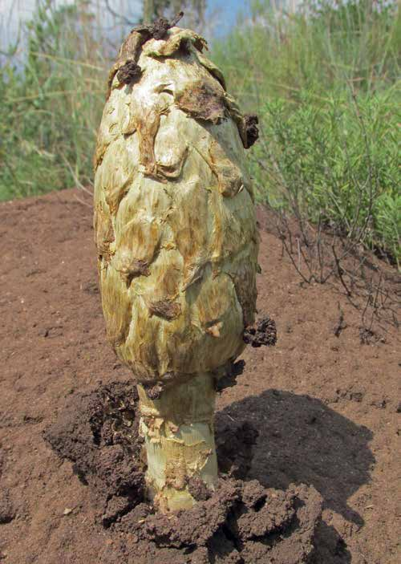
Choice edibleAmong Africa's most prized wild edibles — farmed underground by termites.
Field notesOther Termitomyces and Agaricus species.
Termites farm it on underground combs — the mushroom rises on a root-like stalk (pseudorhiza) after the rains.
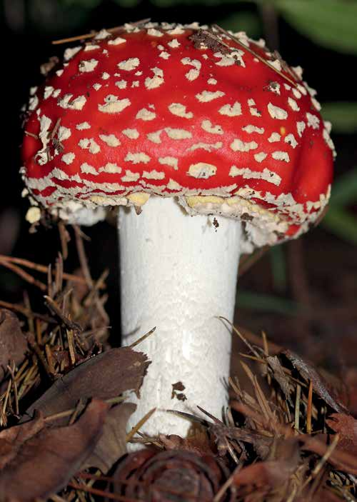
PoisonousThe storybook toadstool — scarlet, white-warted and genuinely toxic.
Field notesAmanita caesarea — and after rain a wart-less red cap can fool you.
Its toxin is ibotenic acid, not muscarine as is often claimed. Poisonous and bitter — best left standing.
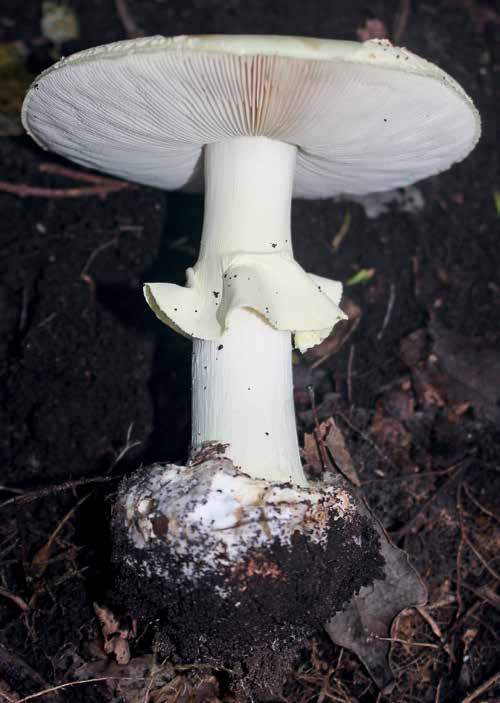
DeadlyThe most deadly mushroom on earth — careful ID is everything.
Field notesVolvariella speciosa, which also has a prominent volva.
An estimated half a cap can kill — and the amatoxins survive cooking, freezing and drying.
Identification is a skill, not a guess. Every Mushroom Fundi forage puts safety first — come learn it properly.
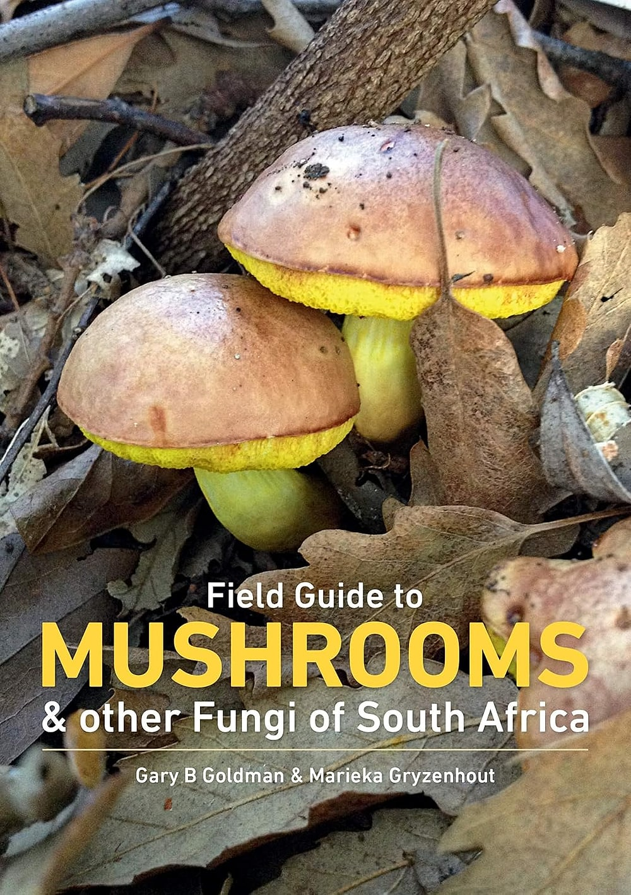
The Book
Years of forest notes, spore prints and hard-won lessons — organised into a richly photographed guide to South African wild mushrooms. Crisp identification images, clear edibility flags, and the stories that make it stick.
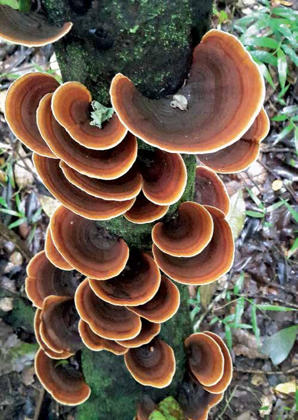
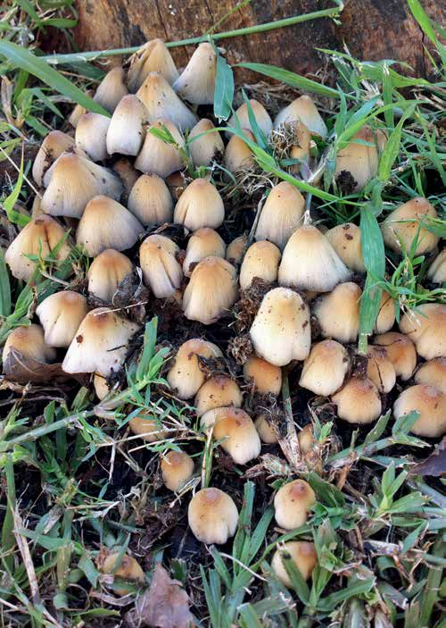
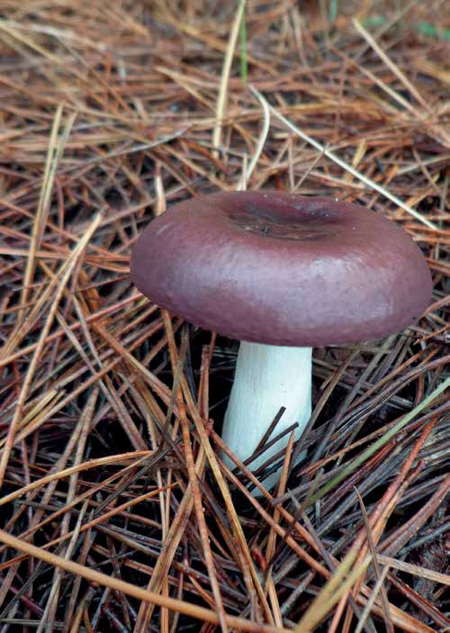
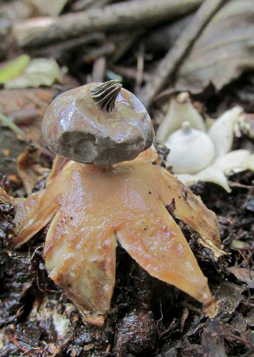
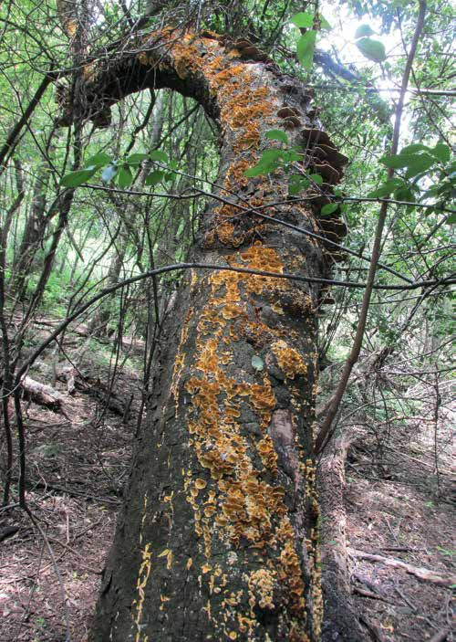
Word from the Forest
"I arrived nervous about touching anything wild and left able to confidently identify a dozen species. Gary is the real deal."
"We met before sunrise and came home with a basket of porcini for breakfast. Worth every early minute — the kids haven't stopped talking about it."
"The book lives in my backpack. It's the only Cape mushroom guide I trust enough to actually eat from."
Join & Forage
Drop your email to be first to hear when forages open — plus seasonal notes on what's fruiting around the Cape.